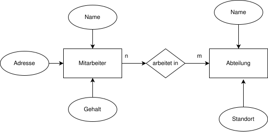
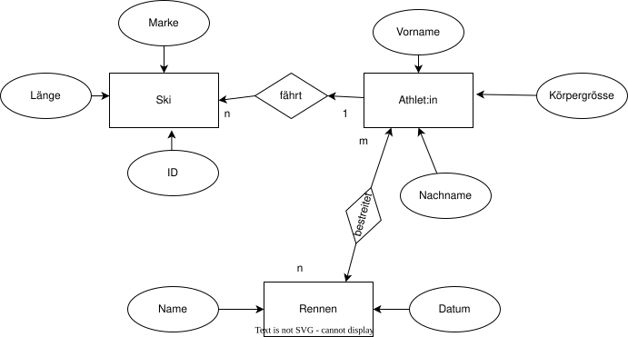
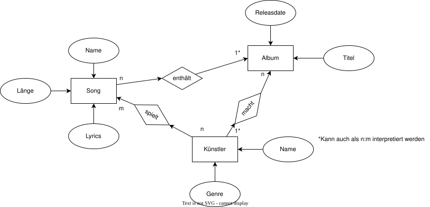
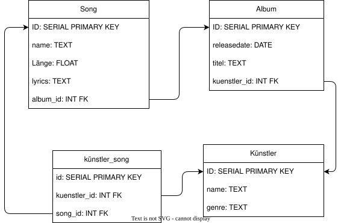
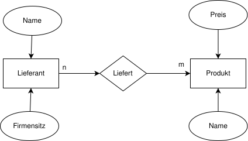
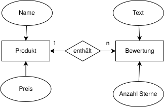
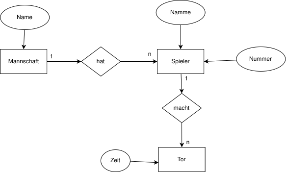
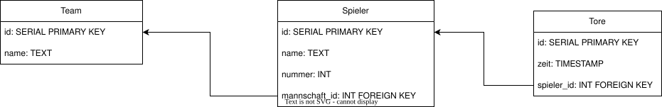
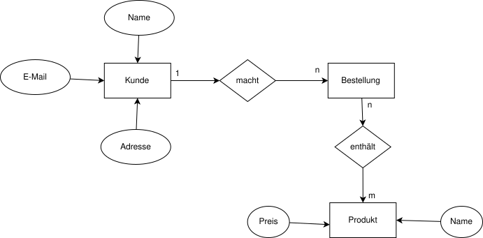

Zeichne für die folgenden Anforderungen je ein ER-Diagramm:
In einer Firma soll das Mitarbeiterverzeichnis in einer Datenbank gespeichert werden. Dazu müssen die Mitarbeiter mit Namen, Adresse und Gehalt erfasst werden können. Für jede Abteilung sollen der Name der Abteilung sowie der Standort gespeichert werden. Mitarbeiter können an mehreren Abteilungen arbeiten.

Der Skiverband will für die Olympia ein System zur Übersicht über die Athlet:innen und Skis. Im System sollen alle Athletinnen und Athleten mit Vorname, Nachname und Körpergrösse gespeichert werden. Für die Skis sollen die Marke, eine ID und die Länge gespeichert werden. Athlet:innen können mehrere Skis haben, aber die Skis der Athlet:innen werden nicht von anderen gefahren.
(Lösung siehe unten)
Nun will das Team für die kommenden Wettbewerbe eine Übersicht haben. Zusätzlich zum oben genannten System sollen noch Rennen abgespeichert werden können. Ein Rennen besteht aus einem Namen (Abfahrt / slalom / ...) und einem Datum. Die Athlet:innen können verschiedene Rennen fahren.

Wie sieht wohl das System hinter Spotify aus? Zeichnen Sie ein ERD anhand der folgenden Annahmen: Spotify speichert Songs mit dessen Name, Länge und lyrics. Jeder Song gehört zu einem Album, wo jeweils Titel und Releasdate gespeichert sind. Die Alben und Songs gehören zu Künstlern, wo jeweils Name und Genre gespeichert sind. Mache dir Gedanken über die Beziehung zw. Künstlern und Songs / Künstlern und Albums.


Amazon möchte, dass auch externe Lieferanten Produkte in den Amazon-Webshop stellen können. Dazu müssen Produkte mit ihrem Namen und dem Preis gespeichert werden können. Die Produkte sollen mit den Lieferanten, die das Produkt liefern können, verknüpft sein. Lieferanten bestehen aus einem Namen, und dem Ort des Firmensitzes.

Ein Laden will einen Onlineshop einrichten. Darin will er die Produkte mit ihrem Namen und dem Preis ablegen. Besucher sollen Bewertungen abgeben können, die aus der “Anzahl Sterne” und einem Text bestehen

Der Schweizer Fussballverband möchte für alle Super-League-Spiele ein Online-Verzeichnis erstellen. Darin sollen alle Mannschaften mit Namen erfasst sein, sowie deren Spieler mit Namen und Trikotnummer. Ausserdem soll für jedes Tor gespeichert werden können, an welchem Datum und von welchem Spieler es erzielt wurde.


Digitec möchte eine neue Datenstruktur für die Bestellabwicklung. Die Datenstruktur muss die folgenden Daten enthalten: Kunden mit Namen, E-Mail und Postadresse; Produkte im Webshop mit Namen und Preis; Bestellungen, die erfassen, welche Kunden welche Produkte bestellen.
